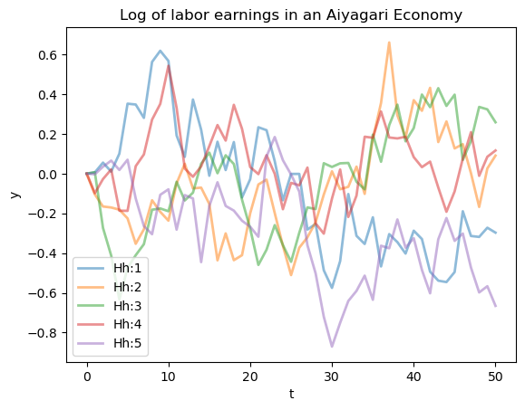

Lab3
ECNM10115 Programming and Numerical Methods for Economics
#
#
#
PS1: Feedback#
#
#
#
#
PS1: Feedback: General Comments#
From Lecture 1: Submission of the problem set must consist of a SINGLE DOCUMENT containing all the answers and the code for all the exercises.
The document must be called: PSX groupY.
Please make sure to avoid typos.
Submit only one file per submission.
Use Markdown syntax to improve the presentation of your work.
Include the relevant equations to describe your work.
Provide economic interpretations for your figures and results.
Add references if it is necessary. Please the university guidelines for using AI.
#
#
PS1: Feedback: Statistics#
Statistic |
Value |
|---|---|
Mean |
69 |
SD |
6 |
Min |
55 |
Max |
79 |
*As a reference, last Year PS1 average was 62.
#
#
#
#
#
Import Libraries, Functions and Display Settings#
import numpy as np
import statsmodels.api as sm
import matplotlib.pyplot as plt
import seaborn as sns
np.random.seed(23) # fix the seed at the beginning and only once.
import os
import quantecon as qe
# os.chdir(r"C:\Users\jzurita\OneDrive - University of Edinburgh\Courses\Programming Numerical Methods\Week 4")
# from functions import gini
# import quantecon as qe
import warnings
warnings.filterwarnings('ignore')
#
Exercise 1#
Tips#
$\(y_i = 2 + 0.5x_{2,i} + e_{i}\)$#
Check: StatsModels Library#
https://www.statsmodels.org/stable/generated/statsmodels.regression.linear_model.OLS.html
# Library
import statsmodels.api as sm
Y = X0 + 0.5*X1 + ei
model= sm.OLS(Y,X)
results=model.fit()
Simulations#
$$\begin{bmatrix}#
t & 1 & 2 & 3 & … & T \ N=1 & y_1 & y_2 & y_3 & … & y_T \ \end{bmatrix} $$
Exercise 2#
$\(y_{t+1} = a + rho \times y_t + e_t\)$#
where
$\(e_t \sim N(0,\sigma_e)\)$#
Let’s define a function for an AR(1) process#
What are the arguments of that function?#
$\(\mathbf{F}\left(x,x,x,x,x \right)= OUTPUT \)$#
What are the \(x_s\)?#
We run a simulation of the AR(1) for t=T.#
$$\begin{bmatrix}#
t & 1 & 2 & 3 & … & T \ N=1 & y_1 & y_2 & y_3 & … & y_T \ \end{bmatrix} $$
We run two simulations of the AR(1) for t=T.#
N=2 (Two simulations)…. N=N (N simulations)
$$\begin{bmatrix}#
t & 1 & 2 & 3 & … & T \ N=1 & y_{1,1} & y_{1,2} & y_{1,3} & … & y_{1,T} \ N=2 & y_{2,1} & y_{2,2} & y_{2,3} & … & y_{2,T} \ … & … & … & … & … &… \ N=N & y_{N,1} & y_{N,2} & y_{N,3} & … & y_{N,T} \ \end{bmatrix} $$
$$\begin{bmatrix}#
N \times T \end{bmatrix} $$
If we add an initial value at t=0 (y_0=0)#
$$\begin{bmatrix}#
t &0 & 1 & 2 & 3 & … & T \ N=1 &y_0& y_{1,1} & y_{1,2} & y_{1,3} & … & y_{1,T} \ N=2 & y_0&y_{2,1} & y_{2,2} & y_{2,3} & … & y_{2,T} \ … &y_0& … & … & … & … &… \ N=N & y_0&y_{N,1} & y_{N,2} & y_{N,3} & … & y_{N,T} \ \end{bmatrix} $$
$$\begin{bmatrix}#
N \times (T+1) \end{bmatrix} $$
#
#
rho_a= 0.5
sigma_a=0.15
# a Simulate and plot the AR(1) process given by equation (1) for T=50 periods.
def ar_1_sim(T,rho,y0=0,a=0,sigma_e=1):
'''
ar_1_sim simulates for T periods an AR(1) process of the following form:
y_t+1 = a + rho*y_t + e_t
where e_t ~ N (0,sigma_e)
'''
y = np.empty(T+1) # store your elements - A vector Tx1
y[0] = y0 # allocate my initial value in the first row
for i in range(1,T+1):
e = np.random.normal(0,sigma_e,1)
y[i] = a+ rho*y[i-1]+e
return y
Let’s create a graph#
T=100
y1 = ar_1_sim(T,rho=rho_a, sigma_e=sigma_a)
print(' ')
print('2a =======)')
fig, ax = plt.subplots(figsize=(13,4))
ax.plot(range(0,T+1), y1, linewidth=4.0, color='b')
ax.set_xlabel('Time')
ax.set_ylabel('y')
ax.set_title(r'Log of labor earnings in an Aiyagari Economy')
ax.grid()
plt.show()
2a =======)

How to simulate this process T times?#
Steps:#
Using our previous function, identify what objects will change?
Identify if we need new objects
Work line by line
What’s the size of my output now? \(\implies\) allocation object should be different
Do I need more arguments in my function?
What is the size of \(\epsilon\)?
If \(\epsilon\) is size \(=\) \(r\times c\), this implies that y, in each iteration, must have the same dimentions.
Think how to store the value of y in each iteration.
def ar_1_sim_N(T,rho,y0=0,a=0,sigma_e=1):
'''
ar_1_sim simulates for T periods an AR(1) process of the following form:
y_t+1 = a + rho*y_t + e_t
where e_t ~ N (0,sigma_e)
'''
y = np.empty(T+1) #(101,1)
y[0] = y0
for i in range(1,T+1):
e = np.random.normal(0,sigma_e,1) # 1
y[i] = a+ rho*y[i-1]+e #(101,1)
return y
T=100
N=1
output = ar_1_sim_N(T=T,rho=rho_a,sigma_e=sigma_a)
np.shape(output)
(101,)
## b. AR(1) for size N,T
def ar_1_sim_N(N,T,rho,y0=0,a=0,sigma_e=1):
y = np.empty((N,T+1))
y[:,0] = y0
for i in range(1,T+1):
e = np.random.normal(0,sigma_e,N)
y[:,i] = a+ rho*y[:,i-1]+e
return y
len(five_ar1s)
5
print(' ')
print('2c =======)')
fig, ax = plt.subplots()
for i in range(0,len(five_ar1s)):
ax.plot(range(0,T+1), five_ar1s[i,:], linewidth=2.0, alpha=0.5, label='Hh:'+str(i+1))
ax.set_xlabel('t')
ax.set_ylabel('y')
ax.set_title(r'Log of labor earnings in an Aiyagari Economy')
ax.legend()
plt.show()
2c =======)

1. Discretizing AR(1) process into a Markov Chain#
from quantecon import rouwenhorst
# 1. Let's have the 2 AR(1) we saw in this class:
y1 = ar_1_sim(10000,rho=0.25, a=0)
y2 = ar_1_sim(10000,rho=0.25,a=2)
mean_y1 = np.mean(y1)
mean_y2 = np.mean(y2)
print('mean of Ar(1) y1:', mean_y1) # approx mu* = a/(1-rho) = 0
print('mean of Ar(1) y2:', mean_y2) # approx mu* = a/(1-rho) = 2/(1-0.25) =2.66
mean of Ar(1) y1: -0.028307597572529593
mean of Ar(1) y2: 2.6613404190150374
#rouwenhorst(n, rho, sigma, mu=0.0)
mc_ar1 = rouwenhorst(5,0.25,1, mu=0)
P1 = mc_ar1.P
psi1_star = mc_ar1.stationary_distributions
y1_values = mc_ar1.state_values
The expected value (mu*) of y1 is:#
mean_mc_y1 = psi1_star@y1_values # note that matrix product is equivalent to sum(p_i*y_i)
print('mean of Ar(1) y1:', mean_y1)
print('mean MC approx of AR(1) y1:', mean_mc_y1)
mean of Ar(1) y1: -0.028307597572529593
mean MC approx of AR(1) y1: [0.]
mc_ar2 = rouwenhorst(5,0.25,1, mu=2)
P2 = mc_ar2.P
psi2_star = mc_ar2.stationary_distributions
y2_values = mc_ar2.state_values
mean_mc_y2 = psi2_star@y2_values
print('mean of Ar(1) y2:', mean_y2)
print('mean MC approx of AR(1) y1:', mean_mc_y2)
mean of Ar(1) y2: 2.6613404190150374
mean MC approx of AR(1) y1: [2.66666667]